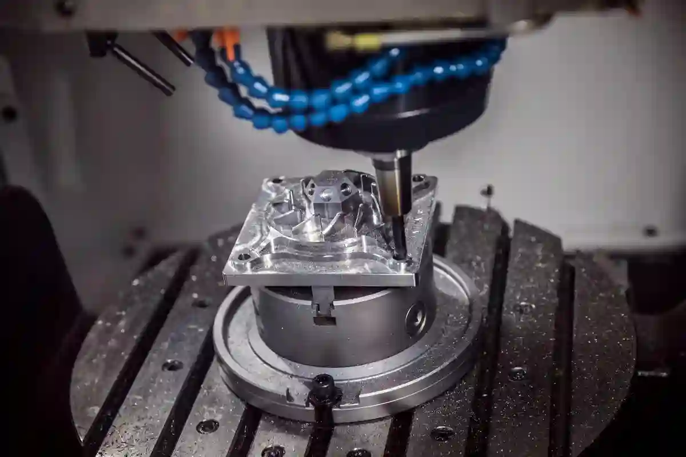
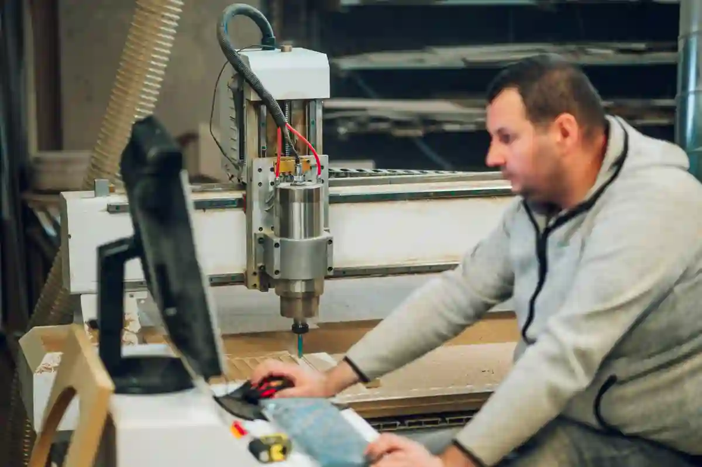

CNC Üretim Teklif Süreci Nasıl İlerler? – CNC İmalat Rehberi
CNC tabanlı üretim projelerinde doğru maliyet, süre ve kalite dengesi ancak doğru kurgulanmış bir CNC üretim teklif süreci ile mümkündür. Özellikle özel parça imalatı, düşük toleranslı bileşenler veya seri üretime geçiş planlanan projelerde teklif süreci, yalnızca bir fiyat verme aşaması değil; aynı zamanda üretilebilirliğin, risklerin ve mühendislik yaklaşımının test edildiği kritik bir filtredir.
Piyasada sıkça karşılaşılan hatalardan biri, cnc imalat teklif alma sürecinin yalnızca “parça başı fiyat” olarak değerlendirilmesidir. Oysa gerçekçi bir teklif; teknik çizim analizi, malzeme seçimi, talaş kaldırma stratejisi, bağlama yöntemi, makine zamanı ve kalite kontrol adımlarının tamamını kapsar. Bu nedenle teklif süreci ne kadar sağlıklı ilerlerse, üretim süreci de o kadar öngörülebilir ve sürdürülebilir olur.
Bu rehberde; cnc üretim teklif aşamalarını mühendislik bakış açısıyla ele alacak, teklifin hangi verilerle şekillendiğini ve neden firmadan firmaya ciddi fiyat farkları oluştuğunu detaylandıracağız.
CNC Üretim Teklif Süreci Nedir ve Neden Kritiktir?

CNC üretim teklif süreci, bir parçanın teknik olarak üretilebilir olup olmadığının analiz edildiği, maliyet unsurlarının hesaplandığı ve teslimat planının netleştirildiği ön değerlendirme sürecidir. Bu aşama, yalnızca üretici için değil; teklifi talep eden firma için de riskleri minimize eden bir karar mekanizmasıdır.
Özellikle cnc parça üretim teklifi talep edilirken eksik veya hatalı bilgi paylaşılması, üretim sırasında revizyonlara, maliyet artışlarına ve termin kayıplarına neden olur. Bu yüzden profesyonel CNC firmaları teklif sürecini, üretimin ayrılmaz bir parçası olarak ele alır.
Teklif sürecinin kritik olmasının başlıca nedenleri şunlardır:
- Üretilebilirlik risklerinin erken tespiti
- Gereksiz maliyet kalemlerinin ayıklanması
- Doğru makine ve operasyon planlaması
- Kalite standartlarının önceden tanımlanması
Bu noktada, CNC İmalat Rehberi gibi kapsamlı kaynaklar, teklif sürecinin genel çerçevesini anlamak için önemli bir referans sunar.
CNC İmalat Teklif Alma Sürecinin Temel Bileşenleri
Bir CNC firmasının sağlıklı teklif oluşturabilmesi için belirli teknik girdilere ihtiyaç vardır. CNC imalat teklif alma süreci genellikle aşağıdaki temel bileşenler üzerinden ilerler.
Teknik Çizim ve Model Verileri
Teklifin bel kemiğini teknik çizimler oluşturur. Ölçülendirilmiş 2D teknik resimler veya STEP/IGES formatındaki 3D modeller, teklifin doğruluğunu doğrudan etkiler. Özellikle teknik çizimle teklif alma süreçlerinde tolerans değerleri, yüzey pürüzlülüğü ve geometrik karmaşıklık net şekilde belirtilmelidir.
Bu konunun detaylarını, CNC İmalatta Teknik Çizim Teklifi Nasıl Etkiler? başlıklı içerikte daha derinlemesine inceleyebilirsiniz.
Malzeme Türü ve Tedarik Durumu
Alüminyum, paslanmaz çelik, plastik veya özel alaşımlar; işleme süresi, takım aşınması ve maliyet üzerinde doğrudan etkilidir. Malzemenin müşteri tarafından mı sağlanacağı yoksa üretici tarafından mı tedarik edileceği de teklif kalemlerini değiştirir.
Bu noktada Türkiye’de yaygın kullanılan malzeme standartları için Türk Mühendis ve Mimar Odaları Birliği (TMMOB) gibi teknik meslek odalarının yayınları referans alınabilir.
CNC Teklif Sürecinde İlk Mühendislik Değerlendirmesi
Teklif hazırlığının görünmeyen ama en kritik adımı mühendislik analizidir. Parça, CNC tornalama mı yoksa CNC frezeleme ve dik işleme ile mi daha verimli üretilecek? Tek bağlama mı gerekir, çoklu operasyon mu? İşte bu sorular teklifin iskeletini oluşturur.
Bu aşamada yapılan doğru değerlendirme, üretim sırasında yaşanabilecek revizyon taleplerinin önüne geçer. Ayrıca CNC Özel Üretim Teklif Süreci Nasıl İşler? içeriği, bu mühendislik yaklaşımının pratikte nasıl uygulandığını net şekilde ortaya koyar.
CNC Üretim Teklif Aşamaları Nasıl İlerler?

Profesyonel bir cnc üretim teklif süreci, rastgele ilerleyen bir fiyatlandırma faaliyeti değildir. Aksine; belirli mühendislik adımlarına, teknik kontroller zincirine ve maliyet hesaplama disiplinine dayanır. Bu nedenle teklifin hangi aşamalardan geçtiğini bilmek, hem satın alma tarafı hem de üretici için süreci şeffaf ve yönetilebilir kılar.
Genel olarak cnc üretim teklif aşamaları aşağıdaki temel adımlar üzerinden ilerler.
Talep ve Teknik Dokümanların İncelenmesi
Teklif sürecinin ilk adımı, müşteri tarafından iletilen dokümanların analizidir. Bu aşamada yalnızca dosyaların varlığı değil, içeriklerinin üretime uygunluğu değerlendirilir.
İncelenen başlıca unsurlar şunlardır:
- Teknik resim formatı (2D / 3D)
- Ölçülendirme ve tolerans değerleri
- Yüzey pürüzlülüğü ve özel işlem notları
- Revizyon tarihi ve parça kodu
Eksik veya çelişkili bilgiler, teklif sürecini doğrudan uzatır. Bu nedenle teknik çizimle teklif alma aşaması, çoğu zaman ek geri bildirim ve revizyon talepleriyle ilerler.
Bu konunun CNC tarafındaki detaylı etkisini CNC İmalatta Teknik Çizim Teklifi Nasıl Etkiler? başlığı altında ele alan içeriğe göz atmak, teklif kalitesini artırır.
Üretim Yönteminin Belirlenmesi (Tornalama mı, Frezeleme mi?)
Teknik dokümanlar netleştikten sonra mühendislik ekibi, parçanın hangi üretim yöntemiyle daha verimli üretileceğini değerlendirir. Bu karar, teklif bedelini doğrudan etkiler.
Örneğin:
- Dönel simetrili parçalar için CNC Tornalama
- Karmaşık geometriler ve prizmatik parçalar için CNC Frezeleme ve Dik İşleme
Yanlış yöntem seçimi, hem makine süresini uzatır hem de takım maliyetlerini artırır. Bu nedenle profesyonel CNC firmaları, teklif aşamasında operasyon planını netleştirmeden fiyat sunmaz.
CNC Parça Üretim Teklifi Hazırlanırken Maliyet Nasıl Hesaplanır?
Bir cnc parça üretim teklifi, yalnızca “parça başı süre × saatlik makine bedeli” mantığıyla hazırlanmaz. Gerçekçi bir fiyatlandırma, çok sayıda teknik ve operasyonel parametreye dayanır.
Makine Süresi ve Operasyon Sayısı
Makine süresi; bağlama, sıfırlama, kaba talaş, finiş işlemleri ve ölçüm adımlarının toplamından oluşur. Parçanın tek bağlamada mı yoksa çoklu bağlamada mı üretileceği, süreyi ciddi şekilde etkiler.
Özellikle düşük toleranslı parçalarda, ölçüm ve ara kontrol süreleri teklif kalemlerine eklenir. Bu detaylar teklifin neden “ucuz” veya “pahalı” göründüğünü açıklar.
Takım, Aparat ve Kurulum Maliyetleri
Standart dışı kesici takımlar, özel bağlama aparatları veya fikstür ihtiyacı olan parçalar için ek maliyet hesaplaması yapılır. Bu maliyetler genellikle ilk siparişte daha yüksektir ve seri üretimde parça başına düşen maliyet azalır.
Bu noktada CNC sektöründeki genel maliyet kalemleriyle ilgili resmi ve teknik yayınlar için TMMOB Makina Mühendisleri Odası gibi yüksek otoriteli kaynaklar referans kabul edilir.
CNC Fiyat Teklifi Hazırlama Sürecinde Sıklıkla Yapılan Hatalar
CNC fiyat teklifi hazırlama sürecinde yapılan bazı yaygın hatalar, teklif-sonrası üretim aşamasında ciddi problemlere yol açar.
En sık karşılaşılan hatalar şunlardır:
- Toleransların göz ardı edilmesi
- Yüzey kalitesi taleplerinin fiyatlandırmaya dahil edilmemesi
- Seri ve prototip üretim maliyetlerinin aynı değerlendirilmesi
- Termin süresinin teknik kapasiteye göre planlanmaması
Bu tür hatalar, teklifin kabul edilmesinden sonra revizyon taleplerine ve güven kaybına neden olur. Bu nedenle deneyimli CNC firmaları, teklif sürecinde “en düşük fiyat” değil, “en doğru fiyat” yaklaşımını benimser.
Bu yaklaşımın pratikte nasıl uygulandığını görmek için CNC Özel Üretim Teklif Süreci Nasıl İşler? içeriği önemli bir referanstır.
Prototip ve Seri Üretimde CNC Teklif Süreci Neden Farklıdır?
CNC üretim teklif süreci, üretim adedine bağlı olarak ciddi biçimde değişir. Prototip üretim ile seri üretim arasında yalnızca miktar farkı yoktur; mühendislik yaklaşımı, maliyet dağılımı ve termin planlaması da tamamen farklıdır. Bu ayrımı doğru anlamadan alınan cnc imalat teklif alma kararları, beklenti ile sonuç arasında kopukluk yaratır.
Prototip Üretimde Teklif Mantığı
Prototip üretimde temel amaç, parçanın fonksiyonel olarak doğrulanmasıdır. Bu nedenle hız ve esneklik, maliyetin önüne geçebilir. Prototip tekliflerinde şu unsurlar öne çıkar:
- Tek seferlik kurulum ve bağlama maliyetleri
- Standart dışı operasyonlara daha fazla tolerans
- Manuel müdahale ve ara ölçümlerin artması
Bu nedenle prototip bazlı cnc parça üretim teklifi, parça başı maliyet açısından seri üretime göre daha yüksek görünür. Ancak bu maliyet, sonraki seri üretim aşamasında riskleri azaltan bir yatırım olarak değerlendirilmelidir.
Prototipten seri üretime geçişte teklif yaklaşımının nasıl evrildiğini görmek için CNC Özel Üretim Teklif Süreci Nasıl İşler? içeriği önemli bir referanstır.
Seri Üretimde Teklifin Yeniden Kurgulanması
Seri üretimde teklif süreci, birim maliyet optimizasyonu üzerine kuruludur. Kurulum ve aparat maliyetleri üretim adedine bölünür, makine süreleri standartlaştırılır ve prosesler tekrarlanabilir hale getirilir.
Seri üretim tekliflerinde şu parametreler kritik rol oynar:
- Otomasyon seviyesi
- Takım ömrü ve değişim sıklığı
- Parti büyüklüğü ve üretim döngüsü
Bu nedenle aynı parçaya ait cnc fiyat teklifi hazırlama süreci, prototip ve seri üretimde tamamen farklı rakamlar ortaya koyabilir. Bu fark, çoğu zaman “fiyat tutarsızlığı” olarak algılansa da teknik açıdan son derece doğaldır.
Termin Süresi CNC Üretim Teklifini Nasıl Etkiler?
Bir CNC teklifinin yalnızca fiyat üzerinden değerlendirilmesi, eksik bir bakış açısıdır. Termin süresi; makine parkı, mevcut iş yükü ve üretim önceliklerine göre şekillenir ve teklif bedeline doğrudan yansır.
Acil Üretim ve Önceliklendirme Maliyetleri
Kısa terminli işler, çoğu zaman planlanmış üretimlerin arasına sıkıştırılır veya ek vardiya gerektirir. Bu durum, teklif bedelinde artışa neden olur. Özellikle hassas toleranslı parçalarda hız ile kalite arasında denge kurmak, mühendislik açısından ciddi planlama gerektirir.
Bu noktada cnc üretim teklif aşamaları içerisinde termin değerlendirmesi, fiyat kadar belirleyici bir kriterdir.
Kapasite Planlaması ve Makine Uygunluğu
Her CNC tezgâhı her parçaya uygun değildir. Parçanın boyutu, toleransı ve geometrisi; hangi makinenin kullanılacağını belirler. Yanlış makine seçimi, üretim süresini uzatır ve kalite risklerini artırır.
Bu nedenle profesyonel firmalar teklif aşamasında, parçayı doğrudan CNC Tornalama veya CNC Frezeleme ve Dik İşleme merkezlerinden hangisinin daha uygun olduğu üzerinden değerlendirir. Bu mühendislik kararı, teklifin gerçekçiliğini belirleyen temel faktörlerden biridir.
CNC Üretim Tekliflerinde Revizyon Süreci Nasıl Yönetilmelidir?
Teklif süreci tek yönlü bir iletişim değildir. Özellikle karmaşık parçalarda, teklif sonrası revizyon talepleri sürecin doğal bir parçasıdır. Buradaki kritik nokta, revizyonların kontrolsüz hale gelmemesidir.
Teknik Revizyonlar ve Fiyat Güncellemeleri
Tolerans daraltılması, malzeme değişikliği veya yüzey işlemi eklenmesi gibi teknik revizyonlar, teklifin yeniden hesaplanmasını gerektirir. Bu noktada şeffaf bir cnc üretim teklif süreci, revizyonların neden maliyet artışı yarattığını net biçimde ortaya koyar.
Teknik revizyonların teklif üzerindeki etkisini doğru anlamak için CNC İmalatta Teknik Çizim Teklifi Nasıl Etkiler? içeriği süreci netleştirir.
İletişim ve Dokümantasyonun Önemi
Revizyon yönetiminde en sık yapılan hata, sözlü onaylarla ilerlemektir. Profesyonel CNC firmaları, her revizyonu yazılı ve revizyon kodlu şekilde kayıt altına alır. Bu yaklaşım, hem fiyat hem de termin açısından tarafları korur.
Türkiye’de endüstriyel üretimde dokümantasyon ve proses yönetimi konusunda genel çerçeve sunan teknik yayınlar için T.C. Sanayi ve Teknoloji Bakanlığı gibi resmi kaynaklar referans alınabilir.
Kalite Kontrol ve Ölçüm Kriterleri CNC Teklifini Nasıl Etkiler?
Bir cnc üretim teklif süreci, yalnızca parçanın işlenmesiyle sınırlı değildir. Üretim sonrası kalite kontrol ve ölçüm adımları, teklif bedelinin önemli bir bölümünü oluşturur. Özellikle hassas toleranslı ve fonksiyonel parçalarda, ölçüm süreci üretimin kendisi kadar kritik hale gelir.
Bu nedenle profesyonel CNC firmaları, kalite kontrol gereksinimlerini teklif aşamasında netleştirir ve fiyatlandırmayı buna göre yapar.
Tolerans Değerlerinin Teklif Üzerindeki Etkisi
Tolerans daraldıkça üretim süresi uzar. Bunun temel nedeni, daha düşük ilerleme hızları, daha fazla ara ölçüm ve gerektiğinde ek finiş operasyonlarıdır. ±0,10 mm toleransla üretilebilecek bir parça ile ±0,01 mm tolerans gerektiren bir parça arasında ciddi maliyet farkı oluşur.
Bu noktada cnc fiyat teklifi hazırlama sürecinde toleransların doğru yorumlanması hayati önem taşır. Tolerans gereksinimi gereğinden sıkı belirtilmişse, teklif maliyeti gereksiz yere yükselir. Bu durum, özellikle ilk kez cnc imalat teklif alma sürecine giren firmalar için sıkça karşılaşılan bir hatadır.
Ölçüm Yöntemleri ve Ekipman Gereksinimi
Standart kumpas ve mikrometre ölçümleri ile yapılabilen kontroller, teklif maliyetine sınırlı etki eder. Ancak aşağıdaki durumlarda ölçüm maliyetleri belirgin şekilde artar:
- CMM (Koordinat Ölçüm Makinesi) gereksinimi
- Form ve konum toleransları
- Yüzey pürüzlülüğü ölçümleri
- Ölçüm raporu talebi
Bu tür gereksinimler, cnc üretim teklif aşamaları içerisinde ayrı bir kalem olarak değerlendirilir. Ölçüm raporu talep edilen projelerde, rapor hazırlama süresi ve insan kaynağı da teklif fiyatına dahil edilir.
Yüzey Kalitesi ve İkincil İşlemler Teklifte Nasıl Değerlendirilir?
Yüzey kalitesi, CNC üretimde çoğu zaman göz ardı edilen ancak maliyeti doğrudan etkileyen bir parametredir. Ra 3.2 ile Ra 0.8 gibi farklı yüzey pürüzlülük değerleri, kullanılan takım tipinden makine ayarlarına kadar pek çok değişkeni etkiler.
Yüzey Pürüzlülüğü Talepleri
Daha düşük Ra değerleri:
- Daha düşük ilerleme hızları
- Daha sık takım değişimi
- Daha uzun finiş süreleri
anlamına gelir. Bu nedenle cnc parça üretim teklifi, yüzey pürüzlülüğü gereksinimi netleştirilmeden sağlıklı biçimde oluşturulamaz.
Kaplama, Isıl İşlem ve Özel Prosesler
Anodizasyon, sertleştirme, taşlama veya kaplama gibi ikincil işlemler; çoğu zaman CNC üretim sürecinin dışında gerçekleşir ancak teklifin ayrılmaz bir parçasıdır. Bu işlemler için dış tedarikçi kullanılması durumunda:
- Ek termin süresi
- Taşıma ve organizasyon maliyetleri
- Proses uyumluluk riskleri
teklif fiyatına yansır. Bu nedenle profesyonel firmalar, bu tür işlemleri teklif metninde açıkça belirtir ve ayrı kalemler halinde sunar.
Ucuz CNC Teklifi ile Doğru CNC Teklifi Arasındaki Fark
Piyasada sıklıkla karşılaşılan bir durum, farklı firmalardan alınan cnc üretim teklif süreci çıktılarının ciddi fiyat farkları göstermesidir. Bu fark çoğu zaman “aynı parça, farklı fiyat” şeklinde yorumlanır; ancak arka planda büyük teknik farklılıklar bulunur.
Ucuz Teklifin Gizli Riskleri
Aşırı düşük fiyatlı tekliflerde genellikle şu unsurlar eksik veya belirsizdir:
- Net tolerans tanımı
- Ölçüm ve kalite kontrol kapsamı
- Yüzey işlemi detayları
- Revizyon ve tekrar işleme sorumluluğu
Bu durum, üretim başladıktan sonra ek maliyet taleplerine veya kalite sorunlarına yol açar. Özellikle ilk defa cnc imalat teklif alma sürecine giren firmalar için bu riskler ciddi kayıplara neden olabilir.
Doğru Teklifin Teknik Avantajları
Doğru hazırlanmış bir cnc fiyat teklifi hazırlama süreci; yalnızca fiyat sunmaz, aynı zamanda üretim stratejisini de ortaya koyar. Operasyon sayısı, kalite kontrol yöntemi, termin süresi ve revizyon koşulları net şekilde tanımlanır.
Bu yaklaşım, teklifin ilk bakışta pahalı görünmesine rağmen uzun vadede daha düşük toplam maliyet ve daha yüksek üretim güvenilirliği sağlar.
CNC Üretim Teklif Sürecini Doğru Yönetmek İçin Stratejik Yaklaşım
CNC üretim teklif süreci, yalnızca bir satın alma adımı değil; üretim kalitesini, toplam maliyeti ve iş sürekliliğini doğrudan etkileyen stratejik bir karar mekanizmasıdır. Bu nedenle sürecin doğru yönetilmesi, teknik yeterlilik kadar sistematik bir değerlendirme yaklaşımı da gerektirir.
Bu bölümde, teklif sürecini bütüncül olarak ele alarak hem satın alma ekipleri hem de teknik yöneticiler için uygulanabilir bir kontrol çerçevesi sunacağız.
CNC İmalat Teklif Alma Sürecinde Kontrol Listesi
Sağlıklı bir cnc imalat teklif alma süreci için aşağıdaki maddelerin tamamının netleştirilmiş olması gerekir. Bu kontrol listesi, tekliflerin teknik ve ticari olarak karşılaştırılmasını kolaylaştırır.
Teknik Girdiler Kontrolü
Teklif talebi gönderilmeden önce şu soruların yanıtı net olmalıdır:
- Teknik çizimler güncel mi ve revizyon kodu var mı?
- Toleranslar fonksiyonel gereksinime göre mi belirlendi?
- Yüzey pürüzlülüğü ve özel prosesler açıkça tanımlandı mı?
Eksik tanımlanmış teknik girdiler, cnc üretim teklif aşamalarının uzamasına ve fiyat belirsizliklerine yol açar.
Fiyatlandırma Kapsamı ve Dahil Olan Hizmetler
Alınan cnc parça üretim teklifi incelenirken yalnızca rakama odaklanmak, sürecin en büyük hatalarından biridir. Teklifin aşağıdaki unsurları içerip içermediği kontrol edilmelidir:
- Kurulum ve bağlama maliyetleri
- Ölçüm ve kalite kontrol kapsamı
- Revizyon ve tekrar işleme koşulları
- Termin ve teslimat şartları
Bu kalemler net değilse, teklif üretim başladıktan sonra değişebilir.
Satın Alma Ekipleri İçin CNC Teklif Değerlendirme Rehberi
Satın alma ekipleri, çoğu zaman teknik detaylar ile ticari beklentiler arasında denge kurmak zorundadır. Bu noktada cnc fiyat teklifi hazırlama sürecini doğru okumak, yalnızca maliyet değil; risk yönetimi açısından da kritiktir.
Teklifleri Karşılaştırırken Sorulması Gereken Sorular
Aynı parça için farklı firmalardan gelen teklifler değerlendirilirken şu sorular mutlaka sorulmalıdır:
- Üretim yöntemi (tornalama / frezeleme) net mi?
- Ölçüm yöntemi ve raporlama belirtilmiş mi?
- Termin süresi gerçekçi mi, kapasiteyle uyumlu mu?
Bu soruların yanıtı, teklifin teknik derinliğini ve üretim disiplinini ortaya koyar.
En Ucuz Teklif mi, En Doğru Teklif mi?
Piyasa pratiğinde en sık yapılan hata, en düşük fiyatı “en iyi teklif” olarak kabul etmektir. Oysa doğru teklif; teknik kapsamı net, revizyon koşulları tanımlı ve üretim riski minimize edilmiş tekliftir.
Bu nedenle cnc üretim teklif süreci, yalnızca fiyat kıyaslaması değil; teknik yeterlilik analizi olarak ele alınmalıdır. Bu yaklaşım, özellikle uzun vadeli tedarik ilişkilerinde ciddi avantaj sağlar.
CNC Üretim Teklif Sürecinin Stratejik Olarak Optimize Edilmesi
Teklif sürecini optimize etmek, hem satın alma tarafı hem de üretici için kazan-kazan ortamı oluşturur. Bunun için süreç, tek seferlik değil; sürekli iyileştirilen bir yapı olarak ele alınmalıdır.
Standartlaştırılmış Teklif Talep Dokümanları
Firmaların sık yaşadığı problemlerden biri, her teklif talebinin farklı formatta iletilmesidir. Standart bir teklif talep dokümanı:
- Teknik netliği artırır
- Teklif süresini kısaltır
- Fiyat karşılaştırmasını kolaylaştırır
Bu yaklaşım, teknik çizimle teklif alma sürecinde yaşanan belirsizlikleri büyük ölçüde ortadan kaldırır.
Uzun Vadeli Tedarikçi İlişkileri
Tek seferlik teklifler yerine, uzun vadeli iş birlikleri kurulan CNC firmaları; parça geçmişini, tolerans hassasiyetlerini ve kalite beklentilerini daha iyi tanır. Bu durum:
- Daha hızlı teklif dönüşleri
- Daha öngörülebilir fiyatlandırma
- Daha stabil kalite
sağlar. Bu nedenle cnc üretim teklif aşamaları, yalnızca bugünü değil; gelecekteki üretim planlarını da kapsayacak şekilde değerlendirilmelidir.
CNC Üretim Teklif Süreci – Genel Değerlendirme
Doğru yönetilen bir cnc üretim teklif süreci, üretimin başarısını belirleyen temel unsurlardan biridir. Teknik çizimden fiyatlandırmaya, kalite kontrol kriterlerinden termin planlamasına kadar her adım; teklifin gerçekçiliğini ve sürdürülebilirliğini etkiler.
Bu rehberde ele alınan yaklaşımlar, teklif sürecini yalnızca “fiyat alma” aşaması olmaktan çıkararak; mühendislik, kalite ve strateji odaklı bir karar sürecine dönüştürmeyi amaçlamaktadır.